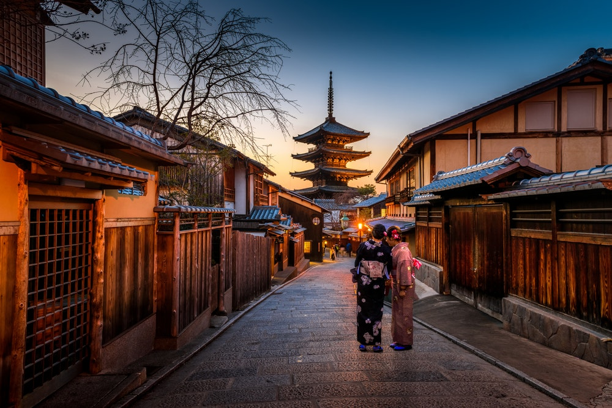
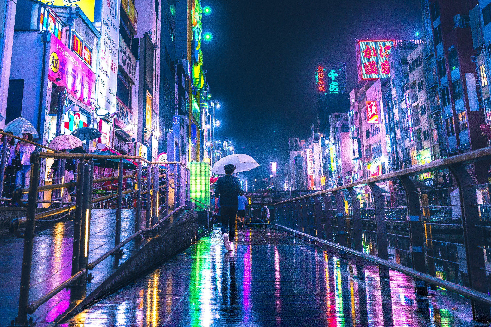
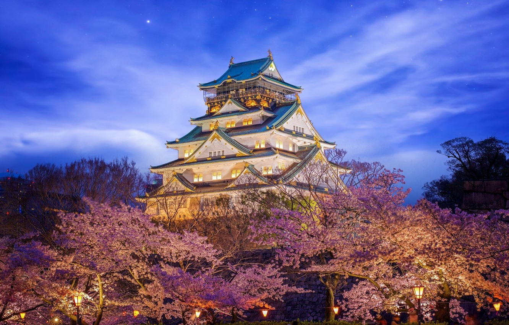
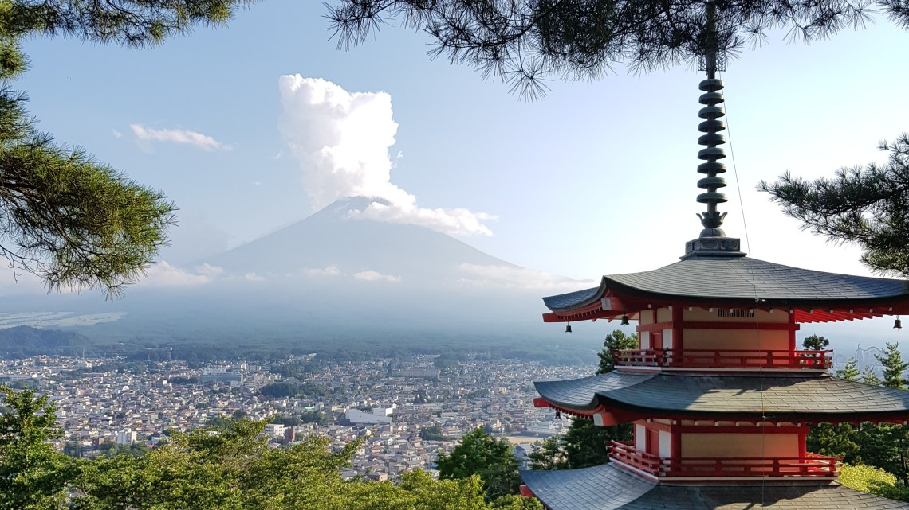
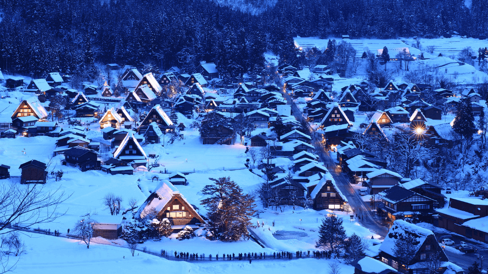

Le Japon, en forme longue l'État du Japon, en japonais Nihon ou Nippon (日本?) et Nihon-koku ou Nippon-koku (日本国?) respectivement, est un pays insulaire de l'Asie de l'Est, situé entre l'océan Pacifique et la mer du Japon, à l'est de la Chine, de la Corée du Sud et de la Russie, et au nord de Taïwan. Étymologiquement, les kanjis (caractères chinois) qui composent le nom du Japon signifient « pays (国, kuni) d'origine (本, hon) du Soleil (日, ni) » ; c'est ainsi que le Japon est désigné comme le « pays du soleil levant ».
Le Japon


Villes incontournables
Tokyo

Poumon économique de l'archipel japonais, Tokyo n'en oublie pas d'offrir une variété de paysages hallucinante à quelques encablures et dans toutes les directions : de la mer à la montagne, de la randonnée à l'infinité bétonnée, de sa modernité la plus vaste à (parfois aussi) sa vétusté délicieuse. La principale question des voyageurs au Japon est souvent de savoir que faire à Tokyo. La capitale s'avère si tentaculaire que des mois entiers ne suffiraient pas à en faire le tour. Si la plupart des touristes choisissent de la panacher avec Kyoto, ce qui s'avère plutôt une bonne idée, d'autres préfèrent consacrer l'entièreté de leur séjour à la fameuse mégapole.
Tokyo, c'est avant tout une autre vision de la mégalopole. Une modernité qui donne l'impression d'avoir voyagé dans le temps (une image qui revient souvent dans ce pays d'ailleurs, que ce soit dans un sens ou dans l'autre), un lieu de bouillonnement permanent dans un espace 20 fois plus large que Paris. Venez donc découvrir avec nous cette ville folle au cours de votre voyage au Japon!
Kyoto
Kyoto est une grande ville située sur l'île principale Honshu, dans la région du Kansai au sud-ouest du lac Biwa. Ancienne capitale du Japon nommée Heian-kyo à l'époque des empereurs, elle regorge de sanctuaires, temples historiques et monuments classés au Patrimoine Mondial de l'Unesco. On la considère souvent comme la cité japonaise traditionnelle par excellence.
Kyoto recèle des centaines de trésors inestimables, et il peut être difficile de s'y retrouver dans ces kyrielles de temples, sanctuaires, châteaux, pavillons et jardins. A titre d'exemple, pas moins de 17 sites de la ville ont été classés patrimoine mondial de l'humanité par l'UNESCO. De quoi donner le tournis!
Kyoto est une ville magique qui vous laissera toujours un petit goût d'inachevé - et vous vous promettrez de revenir admirer les sites que vous n'aurez pas eu le temps de voir cette fois-ci !
Osaka
Osaka est la troisième plus grande ville du Japon et le centre industriel et commercial de l’ouest du Japon. A seulement 2h30 en train shinkansen de Tokyo, Osaka se distingue de la capitale du Japon. Située à l’embouchure de la rivière Yodo qui vient se jeter dans la baie d’Osaka, la ville dispose d’un réseau de canaux qui s’entrecroisent sous ses rues animées et qui ont joué un rôle important dans son essor vers la prospérité. C’est une ville charmante, surtout connue pour sa nourriture, son côté décalé et son ambiance festive nocturne. En plus du shopping et de ses attractions modernes, la ville est également connue pour son côté historique, notamment grâce à son château.
Si vous n’avez qu’un lieu à visiter, un seul, ce doit être absolument le château d’Osaka, qui fut jadis le plus important du Japon et qui a été construit en 1586 par Toyotomi Hideyoshi. La forteresse actuelle, qui s’élève sur cinq étages, est une copie du bâtiment original et elle contient un grand nombre de documents et d’objets d’art dont l’histoire est directement liée à la famille Toyotomi et à l’Osaka du passé.
Lieux Emblématiques

Le château Himeji
Tout d'abord le château de Himeji est considéré au Japoncomme le chateau le plus somptueux. Contrairement aux autres chateaux japonais, il n'a jamais été détruit que ce soit par les guerres, les tremblements de terre ou le feu et a donc survécu au temps dans sa forme d'origine. Quand vous visiterez le chateau Himeji, vous ressentirez a coup sûr l'atmosphère du Japon ancien: la visite est comme un voyage 400 ans en arrière. Le château est le premier site du patrimoine culturel mondial reconnu au Japon et un trésor nationnal.

Le Mont Fuji
Le mont Fuji est un cône volcanique à la symétrie presque parfaite. Il doit cette forme remarquable à sa dernière éruption, en 1707-1708. La neige qui le recouvre la plus grande partie de l’année lui confère une pureté immaculée, quoiqu’il se cache souvent dans un nuage. Ce volcan, culminant à 3 776 mètres, n’est pas seulement le plus haut sommet du Japon, c’est aussi la plus sacrée de ses trois montagnes sacrées (les autres étant les monts Tate et Haku). Le Fuji était déjà révéré par les premiers habitants du pays, les Aïnous, qui le connurent dans une phase plus active : son nom dériverait de celui de leur dieu du Feu, Fuchi.

Le village de Shirakawago
Il est une image du Japon rural faite de vieilles maisons de chaumes et de rizière. Cette image, on la retrouve dans les villages de Shirakawago, classé au patrimoine de l'UNESCO. Si Shirakawago est aussi célèbre, c’est que ses habitations sont construites selon le style gassho-zukuri propre à la région. On reconnaît ce style aux hauts toits de chaumes qui ressemblent à des mains jointes pour la prière. Les intérieurs sont tout en bois, centrés autour d’un foyer et faits pour résister aux fortes chutes de neige de l’hiver. Les demeures familiales de Shirakawago furent préservées dans leur état d'origine depuis près de 250 ans.

Le temple Senso-Ji
Le temple Senso-ji d'Asakusa est dédié à la déesse bouddhique Kannon. Kannon, une boddhisattva (être qui a atteint l’état d’éveil mais qui a choisi de mettre en sursis son statut de bouddha), est très populaire au Japon car elle incarne la compassion. Si à la base, Kannon (dont le nom originel est Guanyin, Kannon étant la version japonaise) est de sexe masculin, ce boddhisattva est vénéré sous sa forme féminine au Japon et en Chine. Le temple est très populaire auprès des tokyoïtes qui accordent une grande importance à Kannon. Le Senso-ji en lui-même est imposant puisqu’il est érigé au centre d’un complexe bouddhique dont l’enceinte englobe des rues entières du quartier d’Asakusa.
Grille tarifaire de notre partenaire
| Services | Formule Basique | Formule Privilège | Formule Premium |
|---|---|---|---|
| 2 semaines en hôtel 5 étoiles | Oui | Oui | Oui |
| Petit déjeuner | Oui | Oui | Oui |
| Pension complète | Oui | Oui | Oui |
| Vol inclus | Non | Oui | Oui |
| Accès illimité au SPA privé | Non | Non | Oui |
| 5h de visite monuments Tokyo | Non | Non | Oui |
| Tarif TTC | 659,00€ | 989,00€ | 1 100,00€ |